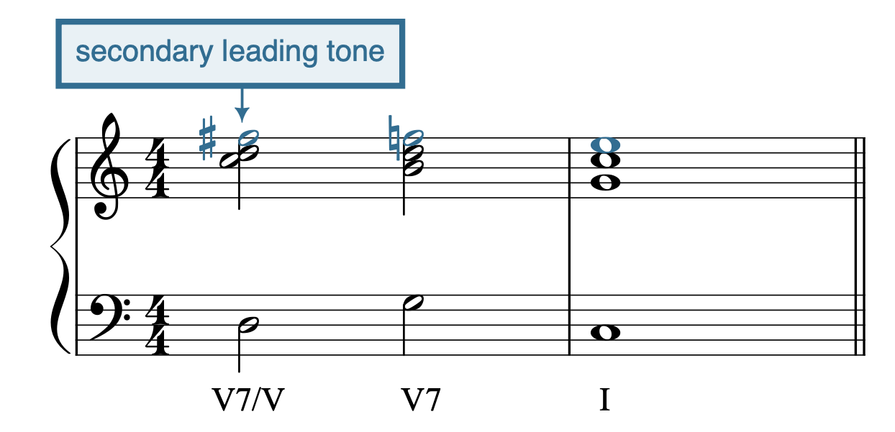

Open Music Theory：繁體中文版
主音化
主音化（tonicization）是讓非主和弦暫時聽起來像主和弦的過程，藉由副屬和弦或副導音和弦達成；英文除了 secondary dominant、secondary leading-tone，也稱 applied dominant、applied leading-tone。我們會先學習如何主音化屬和弦，再看其他和弦的主音化。
查看英文原文
Key Takeaways
- Tonicization is the process of making a non-tonic chord sound like a temporary tonic. This is done with chromatic chords called applied chords, or secondary dominant chords (V(7)) and secondary leading-tone chords (viio(7)) borrowed from the temporary key.
- Applied chords are notated with a slash. The chord before the slash is the identity of the applied chord within the secondary key, and the chord after the slash is the chord being tonicized. It's read aloud from left to right with the word "of" replacing the slash: V/ii becomes "five of two."
- Applied chords nearly always involve accidentals, and especially accidentals that raise the pitch.
- Another way of thinking about applied chords is to imagine them as altered versions of the diatonic chord with which it shares a root (for example, ii becomes II♯, which is V/V).
Tonicization is the process of making a non-tonic chord temporarily sound like tonic. It's accomplished using secondary dominant or secondary leading-tone chords (sometimes called applied dominant and applied leading-tone chords). First, we'll learn how to tonicize the dominant, and then we’ll see tonicizations of non-dominant chords.
分析主音化
查看英文原文
Analyzing tonicization
副屬和弦（V(7)/V）
例 1 分析一段暫時讓 V 聽起來像主和弦的音樂，例 2 則抽出例 1 中參與主音化的兩個和弦。這裡是 C7 接到 F 和弦；如果不考慮調號，以及例 1 所提供的上下文，我們會把這兩個和弦分析為 F 大調的 [latex]\mathrm{V^6_5-I}[/latex]（例 2a）。
- 圖中文字：Violin I／Violin II＝第一／第二小提琴；
- Viola＝中提琴；
- Violoncello＝大提琴。
- HC＝半終止；
- PAC＝完全正格終止。
- T＝主和聲；
- PD＝屬前和聲；
- D＝屬和聲。
B♭ 表示 B♭ 大調，p 表示弱奏。
藍色標記為副屬和弦，紅色為隨後的屬和弦。
例 1。Joseph Bologne《六首協奏四重奏》（Six Concertante Quartets）第1首，第二樂章第 1–8 小節中的主音化。
例 2。Joseph Bologne《六首協奏四重奏》第1首，第二樂章第 3–4 小節主音化片段的和聲縮減譜。
現在回到例 1 的上下文，可以看到 F 大和弦在片段的原調 B♭ 大調中，功能是 V（例 2b）。它正是結束第一個樂句的半終止和弦。我們知道這裡並未轉調，因為不僅半終止在 B♭ 大調，第二個樂句也從 B♭ 大調開始，重複第一個樂句的開頭。然而，C7 顯然不屬於 B♭ 大調；低音的 E♮ 臨時記號就告訴我們這一點。如例 2 的分析，C7 是 F 大和弦的 [latex]\mathrm{V^6_5}[/latex]。要在例 1 的上下文中表示這個關係，我們會說 C7 是「V 的 [latex]\mathrm{V^6_5}[/latex]」，寫成「[latex]\mathrm{V^6_5/V}[/latex]」。換句話說，F 大和弦是 V，C7 則是這個 V 和弦的 [latex]\mathrm{V^6_5}[/latex]。我們剛剛標出了第一個副屬和弦！
查看英文原文
Secondary dominant chords (V(7)/V)
Example 1 analyzes a passage that temporarily makes V sound like the tonic chord. Example 2 extracts the two chords from Example 1 that participate in the tonicization. We have a C7 chord moving to an F chord, so if we were to analyze these chords without considering the key signature or the context that Example 1 provides, we'd say the two chords represent the progression [latex]\mathrm{V^6_5-I}[/latex] in F major (Example 2a).
Example 1. Tonicization in Joseph Bologne, Six Concertante Quartets, no. 1, II, mm. 1–8.
Example 2. Reduction of the tonicization in Joseph Bologne, Six Concertante Quartets, no. 1, II, mm. 3–4.
If we now reconsider the context that Example 1 provides, we can see that the F major chord functions as V in the excerpt's home key of B♭ major (Example 2b). Indeed, it's the chord that creates the half cadence that ends the first phrase. We know that we haven't changed keys here because, in addition to the half cadence being in B♭ major, the second phrase also begins in B♭ major (it repeats the beginning of the first phrase). The C7 chord, however, clearly doesn't belong to B♭ major—that's what the E♮ accidental in the bass tells us. As we determined in Example 2, the C7 chord is [latex]\mathrm{V^6_5}[/latex] of the F major chord. To represent that in the context of Example 1, we say that the C7 chord is “[latex]\mathrm{V^6_5}[/latex] of V,” and we write “[latex]\mathrm{V^6_5/V}[/latex].” In other words, the F major chord is V, and the C7 chord is the [latex]\mathrm{V^6_5}[/latex] of that V chord. We've just labeled our first secondary dominant chord!
副導音和弦（viio(7)/V）
主音化也可以使用副導音和弦達成，如例 3。
例 3。Josephine Lang〈Du gleichst dem klaren blanen See〉第 21–24 小節中的主音化。
例 4。Josephine Lang 主音化片段的和聲縮減譜。
- 如果在 G 大調，我們會將這兩個和弦分析為 viio7–I。回想學習導音七和弦時，我們發現大調中常將和弦七音降低，使它成為全減七和弦。這裡也是如此，請留意 E♭！
- 例 3 的片段在 C 大調，因此 G 大和弦應分析為 V，而非 I。這表示 F♯o7 是 V 和弦的 viio7。寫作「viio7/V」，英文讀作「seven diminished seven of five」，即「V 的導音減七和弦」。
- 例 3 加入 [latex]\mathrm{cad.^6_4}[/latex] 來裝飾屬和弦，因此 viio7/V 並未直接解決到 V。
- [latex]\mathrm{cad.^6_4}[/latex] 解決到 V7 而非 V 三和弦。到這一步，就得到例 3 中的實際片段。
查看英文原文
Secondary leading-tone chords (viio(7)/V)
Tonicization can also be accomplished using secondary leading-tone chords, as in Example 3.
Example 3. Tonicization in Josephine Lang, "Du gleichst dem klaren blanen See," mm. 21–24.
Example 4. Reduction of the tonicization in Josephine Lang.
Example 4 walks through how to understand the relationship between the two highlighted chords in Example 3.
- If we were in G major, we would analyze these chords as viio7–I. Recall that when we learned about the leading-tone seventh chord, we discovered that it's common to lower the chordal seventh in major to create a fully diminished seventh chord. That's still true here (notice the E♭!).
- The passage in Example 3 is in C major, so we would analyze the G major chord as V, rather than I. That means the F♯o7 chord is viio7 of the V chord. We write “viio7/V” and say “seven diminished seven of five.”
- The passage in Example 3 adds a [latex]\mathrm{cad.^6_4}[/latex] to embellish the dominant. That's why the viio7/V doesn't resolve directly to V.
- The [latex]\mathrm{cad.^6_4}[/latex] resolves to V7 rather than the V triad. Now we've arrived at the passage in Example 3.
彙整：分析主音化的步驟
半音化是可能出現主音化的線索。由於只有 V(7) 與 viio7，或少見的 vii∅7（見旁註），能形成主音化，因此判斷標記時，最有幫助的問題之一是：「這個半音變化和弦的性質是什麼？」和弦性質決定標記：若是大三和弦或屬七和弦，就標為 V(7)；若是減三和弦或減七和弦，就標為 viio(7)。
遇到半音變化音時，先停下來問自己以下問題：
- 這個半音變化音是和弦音，還是裝飾性和弦外音？
- 若是和弦音：繼續看問題 2。
- 若是裝飾性和弦外音：依其類型加以標示。
- 和弦的性質是什麼？
- 大三和弦或屬七和弦：副屬和弦，標為 V(7)/x。
- 減三和弦或減七和弦：副導音和弦，標為 viio7/x。
- 要判斷上面的 x，先問：這個半音變化和弦在哪個調中是 V 或 viio？再判斷那個調的主三和弦，在此片段原調中應標哪個羅馬數字。這個羅馬數字就是 x。
查看英文原文
Summary: Steps for analyzing tonicization
Chromaticism is an indication that tonicization may be present. Since only V(7) and viio7 (or, rarely, vii∅7—see note in sidebar) can create tonicization, one of the most helpful things for determining the label is to ask “what is the quality of the chromatic chord?” The quality determines the label: if the chord is a major triad or dominant seventh chord, it gets the label V(7). If the chord is a diminished triad or diminished seventh chord, it gets the label viio(7).
When you come across a chromatic note, stop and ask the following questions:
- Is the chromatic note part of the chord, or is it an embellishing tone?
- Part of the chord: move on to question 2
- Embellishing tone: label appropriately
- What's the quality of the chord?
- Major triad or dominant seventh chord: secondary V chord; label is V(7)/x
- Diminished triad or diminished seventh: secondary viio chord; label is viio7/x
- To determine x above, ask: In what key is the chromatic chord V or viio? Then, determine what Roman numeral the tonic triad of that key would get in the home key of your passage. That Roman numeral is x.
副和弦的寫作
查看英文原文
Writing applied chords
拼出和弦
例 5 的影片，逐步示範如何在大調與小調中拼出 V7/V、viio7/V 與 vii∅7/V。我們建議準備一張五線譜紙，隨時暫停影片，自己試做練習。步驟彙整如下：
- 找出被主音化和弦的根音。
- 將這個根音想成暫時調性的主音。
- 在該調中拼出斜線上方的羅馬數字所指的和弦，即 V7 或 viio7。
例 5。拼出副和弦的步驟。
查看英文原文
Spelling
The video in Example 5 walks through the steps for spelling V7/V, viio7/V, and vii∅7/V in major and minor keys. We recommend you grab a piece of staff paper so you can follow along by pausing the video and trying the exercises yourself. The steps are summarized below:
- Determine the root of the chord being tonicized
- Pretend this root is the tonic of a temporary key
- Spell the top Roman numeral in that key (either V7 or viio7)
Example 5. Steps for spelling applied chords.
解決和弦
{kind=link}

secondary leading tone：副導音。
- 下方羅馬數字為 V7/V、V7、I；
- 藍色聲部呈現 F♯–F♮–E。
有一種例外：當被主音化的和弦本身也是七和弦，例如 D7–G7–C，副導音可以下行半音，成為下一個和弦的七音。在這個例子中，就會形成流暢的半音線條 F♯–F♮–E（例 6）。
例 7 的影片，逐步說明如何在大調與小調中拼出 V7/V、viio7/V 與 vii∅7/V。和前一支影片一樣，我們建議隨時暫停，在五線譜紙上試做每個練習。步驟彙整如下：
- 拼出副和弦。
- 依一般的聲部寫作程序配置聲部，但要從暫時的新調性出發，判斷傾向音應如何解決。
- 檢查臨時記號，尤其在小調時。
例 7。副和弦的解決步驟。
查看英文原文
Resolving
The leading tone of the applied chord is referred to as the secondary leading tone; the chordal seventh is referred to as the secondary seventh. These dissonances resolve just as they normally would in their own key.
One exception is that when the tonicized chord is itself a seventh chord (as in the progression D7–G7–C), the secondary leading tone may resolve down by semitone into the seventh of the following chord. In the example progression, this would create a nice chromatic line: F♯–F♮–E (Example 6).
The video in Example 7 walks through the steps for spelling V7/V, viio7/V, and vii∅7/V in major and minor keys. Like with the previous video, we recommend pausing to try each exercise on staff paper. The steps are summarized below:
- Spell the secondary chord
- Follow the typical writing procedure to part-write, but think in the temporary new key to determine how tendency tones resolve
- Check accidentals (especially if in minor)
Example 7. Steps for resolving applied chords.
概述
任何大三和弦或小三和弦都能被主音化，不限於 V。減三和弦與增三和弦不能被主音化，因為不存在減調或增調。因此，除了 viio 與 iio 之外，各級和弦都可以被主音化。
查看英文原文
Overview
Any major or minor triad can be tonicized, not just V. Diminished and augmented triads can’t be tonicized, since there are no diminished or augmented keys. This means that every Roman numeral can be tonicized except viio and iio.
分析各種主音化
主音化 V 以外的和弦時，分析仍遵循前面學過的相同步驟；唯一的不同，是現在可以被主音化的和弦有更多種。請留意半音變化音，它們是可能出現主音化的線索！
不難想像，一個和弦被主音化的頻率，與它本身一般出現的頻率有關。例如，屬和弦與強屬前和弦很常見，因此它們也相當常被主音化。vi 雖然比 ii、IV、V 少見，仍經常被主音化。iii 與 VII（僅小調）的和聲較少見，也較少被主音化。
查看英文原文
Analyzing various tonicizations
When chords other than V are tonicized, we follow the same steps for analysis that we learned earlier; the only difference is that there are now more possibilities for which chords can be tonicized. Be on the lookout for chromatic notes: these are signals that tonicization may be present!
As you might imagine, the frequency with which a given chord is tonicized is related to the frequency with which that chord generally appears. For instance, the dominant and strong predominant chords are quite common, so we also see those chords tonicized with some frequency. The vi chord, while less common than ii, IV, and V, also frequently gets tonicized. The iii and VII (minor only) chords are uncommon harmonies, and we tend not to see them tonicized frequently.
主音化強屬前和弦
主音化強屬前和弦時，通常會對主三和弦的成員作半音變化。例如，只要在主三和弦加入 te [latex](\downarrow\hat7)[/latex]，就很容易將它變成 V7/IV（例 8）。同樣地，將主三和弦的 do（[latex]\hat{1}[/latex]）升高，再加入 te [latex](\downarrow\hat7)[/latex]，便能將它變成 viio7/ii（例 9）。
例 8。Joseph Bologne 第4號弦樂四重奏，第一樂章第 41–47 小節中的 IV 主音化（1:18–1:30）。
例 9。Maria Szymanowska 第4號小步舞曲，第 57–64 小節中的 ii 主音化（1:48–1:55）。
查看英文原文
Tonicizing strong predominants
Tonicizing strong pre-dominants usually involves chromatic inflection of members of the tonic triad. For example, a tonic triad can easily be turned into a V7/IV chord by adding te [latex](\downarrow\hat7)[/latex] to the triad (Example 8). Similarly, a tonic triad can be turned into viio7/ii by raising do ([latex]\hat{1}[/latex]) and adding te [latex](\downarrow\hat7)[/latex] (Example 9).
Example 8. Tonicizing IV in Joseph Bologne, String Quartet no. 4, I, mm. 41–47 (1:18–1:30).
Example 9. Tonicizing ii in Maria Szymanowska, Minuet no. 4, mm. 57–64 (1:48–1:55).
加入主音化的阻礙進行
一種醒目的主音化用法，是藉此突顯阻礙進行（例 10）。這裡在 vi 到來之前，屬和弦先接到 viio7/vi，讓我們更加注意到：V 之後，原本期待的主和弦並未出現。
例 10。Josephine Lang〈Mag da draussen Sehnee〉第 1–5 小節中，加入主音化的阻礙進行。
查看英文原文
Tonicized deceptive motion
One striking way to use tonicization is to highlight a deceptive motion (Example 10). Here, the dominant moves to viio7/vi before the vi chord arrives, which draws our attention even more to the absence of the expected tonic after the V chord.
Example 10. Tonicized deceptive motion in Josephine Lang, "Mag da draussen Sehnee," mm. 1–5.
在自然音進行中加入主音化
主音化的聲部寫作步驟，與主音化 V 時相同；不過，現在也要能處理屬和弦以外的大、小三和弦主音化。例 11 先呈現自然音進行（a），再加入幾處主音化，形成（b）。
例 11。在自然音進行中加入主音化。
查看英文原文
Adding tonicization to diatonic progressions
The steps for part-writing tonicization remain the same as for tonicizations of V. Now, however, we should expect to see tonicizations of non-dominant major and minor triads. Example 11 shows a diatonic progression (a) to which several tonicizations have been added (b).
Example 11. Adding tonicizations to a diatonic progression.
另一種理解副和弦的方法，是把它想成同根音自然音和弦經過變音的版本。
最直接的例子，是將 ii 的 fa（[latex]\hat{4}[/latex]）變成 fi（[latex]\uparrow\hat{4}[/latex]），再像平常一樣接到屬和弦。這個由 fa 到 fi [latex](\hat4-\uparrow\hat4)[/latex] 的變化，將一般的下屬和弦，變成一個在屬調中具有屬功能的和弦。
以 C 大調的 Dmi7–G–C 為例，其羅馬數字是 ii7–V–I。若把第一個和弦中的 fa 改成 fi（[latex]\hat4[/latex] 變成 [latex]\uparrow\hat4[/latex]，也就是 F 變成 F♯），就得到 D7–G–C。在 C 調中，可以將它分析為 II♯7–V–I；請注意，羅馬數字改成大寫，表示和弦性質改變，後方的升記號則進一步說明和弦三音被升高。不過，也可以注意到 D 大和弦屬於 G 大調，在 G 調中具有屬功能（V），而 G 調的主和弦正是下一個和弦。換句話說，我們從 G 調借用屬和弦，再將它運用於 G 大三和弦。因此，這個進行也能重新解讀為 V7/V–V–I。
動手練習！
例 12 彙整副和弦與同根音自然音和弦之間的關係。
例 12。彙整如何以半音變化，將自然音三和弦轉成副屬七和弦 V7。
媒體素材署名
- 〈Private: resolving〉© Megan Lavengood，採用 CC BY-SA（姓名標示－相同方式分享）授權。
查看英文原文
Secondary dominants as altered diatonic chords
Another way of thinking about secondary chords is to imagine them as altered versions of the diatonic chord with which it shares a root.
The most straightforward example is when a ii chord is chromatically altered by changing fa ([latex]\hat{4}[/latex]) to fi ([latex]\uparrow\hat{4}[/latex]) and then progresses, like usual, to the dominant chord. This alteration of fa to fi [latex](\hat4-\uparrow\hat4)[/latex] turns a regular subdominant chord into a chord that has a dominant function in the key of the dominant.
Take the chord progression Dmi7–G–C in C major, which we would label with Roman numerals as ii7–V–I. If we change fa to fi ([latex]\hat4[/latex] to [latex]\uparrow\hat4[/latex], F to F♯) in the first chord, we get D7–G–C. In the key of C, we might analyze this progression as II♯7–V–I(note the uppercase Roman numeral, indicating the change of quality; the sharp sign afterward further clarifies the raised third of the chord). However, we can also note that D major belongs to G major; it is a dominant-functioning chord (V) in the key of G—the key in which the following chord is tonic. In other words, we are borrowing the dominant chord from the key of G and applying it to the G-major triad. Thus, we can re-interpret the progression as V7/V–V–I.
Practice it!
Example 12 summarizes secondary chords as they relate to diatonic chords with the same root.
Example 12. A summary of how diatonic triads may be altered chromatically to generate secondary V7 chords.
- Applied chords worksheet, available in three slightly different versions:
- Version A (.pdf, .mscx). Asks students to identify and write applied V, V7, viio, viio7, and vii∅7 chords with Roman numerals and figures.
- Version B—without ∅7s (.pdf, .mscz). Asks students to identify and write applied V, V7, viio, and viio7 chords with Roman numerals and figures.
- Version C—jazz/pop focus (.pdf, .mscz). No ∅7s or figured bass; all chords in root position. Students identify and write chord symbols in addition to notation.
- Tonicization Voice Leading and Score Analysis (.pdf, .docx). Asks students to write from Roman numerals and figured bass, write from a longer figured bass, and analyze a complete piece with discussion questions.
Media Attributions
- Private: resolving © Megan Lavengood is licensed under a CC BY-SA (Attribution ShareAlike) license